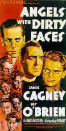

Films on Disc Internet
Magazine includes reviews and feature articles on laser discs, DVDs, information on
vintage movie posters and related links.
Front Cover
March 1998
In this issue....
Features
Hail, Hail, the Gangs in Hollywood
From Angels
with Dirty Faces to West Side Story to Menace II Society, Hollywood
has depicted youth gangs as reflections of the times.

Home
Theater Reference Reviewing System
When you read a DVD review it's of utmost important to know
what equipment is being used to evaluate the quality. Click on the projectors to find out
more.
|
|